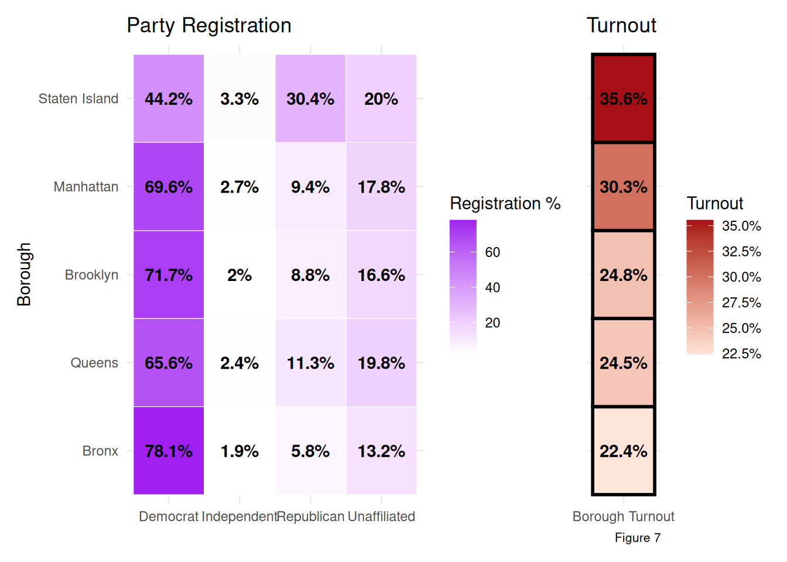

library(readr)
library(ggplot2)
data <- read_csv("data/voter_turnout_data.csv", progress = FALSE, show_col_types = FALSE
)12 NYC voter turnout
Shawna Lane
12.1 Introduction
As a political science-statistics student with an interest in local government, I felt compelled to analyze how voter turnout levels vary across regions, years, and election cycles in NYC. Many of my commitments outside of school also surround issues of political participation, which have led me to analyze the factors that contribute to differences in civic participation. As a result, this project intends to use NYC Open Data’s Historical Voter Turnout Dataset to visualize such patterns. Voter turnout is represented by the percentage of voters who are eligible to participate in elections and proceed to do so. It is one of the primary measures of civic involvement and has proven particularly interesting to study in NYC due to the level of racial, ethnic, educational, and economic diversity in the city. By examining these patterns, we can better understand which communities are more or less politically involved and gain insight into the systemic barriers that may be restricting such participation. We may also obtain information on how major events influence voter turnout. Thus, the analysis will be structured around the following thematic questions:
Which Assembly-Districts have the highest level of voter turnout? Beyond this, which NYC boroughs have experienced the largest change in voter turnout from 2017 to 2024? How has the Covid-19 pandemic influenced voter turnout patterns in each Borough specifically?
How does voter turnout differ between levels of election? (State, Local, and Presidential Elections across the city)? Beyond this, how might party affiliation impact voting patterns?
How does voter turnout in the Assembly District surrounding Columbia University’s Morningside campus compare to turnout in districts surrounding other NYC college campuses, and what might these patterns suggest about the relationship between civic participation, higher educational institutions, and the demographic composition of neighborhoods surrounding certain schools?
12.2 Data
12.2.1 Description
The dataset explored in this project was published by the New York City Campaign Finance Board (CFB) through NYC Open Data. The data are collected through voter turnout calculations from the New York City Board of Elections voter registration file and voter history file. The overall dataset to be analyzed is titled “Historical Voter Turnout” and features NYC voter turnout patterns from 2017 to 2024. The dataset’s geographic levels range from citywide analysis to borough-specific and political districts. The dataset is updated annually, and the most recent change was publicized on December 19th, 2025, and included all updates from the year prior. One benefit to analyzing data provided and maintained by a city agency is that it provides a comprehensive and reliable source of information that can be easily accessed. The data is presented in a table with dimensions of approximately 47,000 rows and 9 columns, such that each row represents the overall voter turnout information for one geographic area within a given election. For example, the first row may represent turnout data for Assembly District (geo_level) 23 (geo_unit) during the 2024 Presidential Primary (election). We learn the number of residents who voted (voted), the number of eligible voters who did not participate (did_not_vote), the statistics for those ineligible to vote (not_eligible_to_vote), turnout percentage (turnout), and the date (election_date) and year (year) of the election. The columns categorize this information in distinct variables for analysis. Most of the quantitative variables are stored as numeric values (dbl), while categorical variables are treated as characters (chr). A few concerns arose as I’ve proceeded with data analysis. The variables (voted), (did_not_vote), and (turnout) were labeled as “Text” on the NYC Open Data website, although they were imported into R as numeric because they contain quantitative values. This required me to ensure that the data being analyzed correctly matched the method used to examine it, therefore avoiding treating quantitative variables as categorical, although they were vaguely labeled text. Another problem is that the dataset does not provide a clear explanation for how rejected or invalid ballots are handled. Therefore, the (voted) variable may not fully reflect the total number of ballots cast in an election versus those actually counted. I started the data exploration with an analysis that averaged voter turnout from 2017 to 2024 and transitioned to an analysis of the years 2017 and 2024 on an individual basis later in the chapter. This was due to the lack of specific data on demographic variables within my Open Data dataset. I therefore had to outsource demographic information and found it better to study specific years, rather than averaging the time period as a whole, for the sake of simplicity. Missing data will be analyzed in a subsequent section.
I used the following information sources in my analysis:
Data link: NYC Open Data – Historical Voter Turnout
CSV/API source: Download the Historical Voter Turnout CSV dataset
2017 Borough Political Affiliation: City Limits – Which Is the Bluest Borough?
Guide for tigris: tigris Webinar Guide
2024 Borough population to compare to voter turnouts: NYC Borough Population Data
Color palettes: ColorBrewer Sequential Palettes
Demographic data to compare racial composition to voter turnouts: Census Reporter
12.2.2 Missing value analysis
12.2.2.1 General Data Missingness
library(dplyr)
library(tidyverse)
library(redav)
data_missing <- data |>
rename(
did_not = did_not_vote,
not_eligible = not_eligible_to_vote
) |>
select(
turnout,
voted,
did_not,
not_eligible
)
plot_missing(
data_missing,
percent = TRUE,
num_char = 10
) +
labs(caption = "Figure 1") +
theme(
axis.text.x = element_text(size = 9),
axis.text.y = element_text(size = 9),
axis.title = element_text(size = 11),
plot.caption = element_text(size = 13)
)
Figure 1 displays the missingness structure for the primary turnout-related variables in the 2017–2024 dataset: turnout, voted, did_not, and not_eligible. The top bar chart shows that turnout and votes contain the largest number of missing observations, while the lower matrix illustrates how missing values co-occur across observations, with purple cells representing present values and grey cells representing missing values. The large “complete cases” bar on the right indicates that most observations contain complete data, although several combinations of missingness suggest that missing values are not entirely random and may reflect differences in election reporting or data availability across geographic units and years.Because the figure focuses only on variables with meaningful patterns of missingness, variables with no missing values were excluded from the visualization. The following analysis, therefore, focuses on how turnout estimates vary across different missing-data thresholds.
12.2.2.2 Geographical Missingness
library(tidyverse)
library(sf)
library(tigris)
options(tigris_use_cache = TRUE, tigris_progress_bar = FALSE)
ny_assembly <- state_legislative_districts("NY", house = "lower", year = 2024)
boroughs <- counties("NY", cb = TRUE, year = 2024) |>
filter(NAME %in% c("New York", "Kings", "Queens", "Bronx", "Richmond")) |>
mutate(
BoroName = recode(
NAME,
"New York" = "Manhattan",
"Kings" = "Brooklyn",
"Richmond" = "Staten Island"
)
) |>
st_transform(st_crs(ny_assembly)) |>
select(BoroName)
assembly_turnout_compare <- data |>
filter(geo_level == "Assembly District") |>
group_by(geo_unit) |>
summarise(
avg_turnout = mean(turnout, na.rm = TRUE),
missing_count = sum(is.na(turnout)),
.groups = "drop"
) |>
crossing(threshold = c("2+ missing values", "3+ missing values")) |>
mutate(
avg_turnout = if_else(
(threshold == "2+ missing values" & missing_count >= 2) |
(threshold == "3+ missing values" & missing_count >= 3),
NA_real_,
avg_turnout
),
Geo_Unit = as.character(geo_unit)
)
assembly_map_compare <- ny_assembly |>
mutate(Geo_Unit = as.character(as.numeric(SLDLST))) |>
left_join(assembly_turnout_compare, by = "Geo_Unit")
assembly_nyc_compare <- st_intersection(assembly_map_compare, boroughs) |>
filter(!is.na(threshold)) |>
mutate(
turnout_group = cut(
avg_turnout,
breaks = c(0, 0.20, 0.25, 0.30, 1),
labels = c("Very Low", "Low", "Moderate", "High"),
include.lowest = TRUE
)
)ggplot(assembly_nyc_compare) +
geom_sf(
aes(fill = turnout_group),
color = "white",
linewidth = 0.2
) +
facet_wrap(~ threshold, nrow = 1) +
scale_fill_manual(
values = c(
"Very Low" = "#E5F5E0",
"Low" = "#A1D99B",
"Moderate" = "#31A354",
"High" = "#00441B"
),
na.value = "grey"
) +
labs(
title = "Assembly District Turnout Under Different Missingness Thresholds (2017–2024)",
fill = "Turnout Level",
caption = "Figure 2"
) +
theme_void() +
theme(
legend.position = "right",
plot.title = element_text(size = 14),
plot.subtitle = element_text(size = 11),
strip.text = element_text(size = 12, face = "bold"),
plot.caption = element_text(
hjust = 1,
size = 6
)
)
As shown in Figure 2, patterns of missing turnout data can be analyzed across New York City Assembly Districts under two missing-data thresholds: districts with turnout-related data missing for at least two elections and those with at least three. Such districts are recoded as unavailable (NA) and displayed in grey, demonstrating how stricter missingness thresholds affect the spatial coverage of turnout estimates between 2017 and 2024. Under the “2+ missing values” threshold, several districts in Upper Manhattan, Staten Island, and portions of outer-borough NYC are excluded from the analysis, while the “3+ missing values” threshold restores broader geographic coverage across the city. Staten Island and portions of outer-borough NYC may exhibit greater missingness because these areas contain fewer assembly districts and appear to have more uneven election reporting across certain election types and years. As a result, even a small number of incomplete turnout records can remove entire districts from the analysis and alter the spatial appearance of turnout patterns across New York City. This discrepancy highlights the importance of addressing data gaps to ensure a more accurate representation of voter engagement.
12.3 Results
12.3.1 Voter Turnout By Geographic Level
Guiding Question: Which Assembly-Districts have the highest level of voter turnout? Beyond this, which NYC boroughs have experienced the largest change in voter turnout from 2017 to 2024? How has the Covid-19 pandemic influenced voter turnout patterns in each Borough specifically?
12.3.1.1 Voter turnouts differences across Assembly-District levels
library(tidyverse)
library(scales)
turnout_compare <- data |>
filter(
geo_level == "Assembly District",
!is.na(turnout)
) |>
mutate(
election_type = case_when(
str_detect(election, "Presidential") ~ "Presidential",
str_detect(election, "Federal") ~ "Federal",
str_detect(election, "State") ~ "State",
str_detect(election, "City") ~ "Local",
str_detect(election, "Off-Year Primary") ~ "Off-Year Primary",
str_detect(election, "General") ~ "General",
TRUE ~ NA_character_
)
) |>
filter(!is.na(election_type)) |>
group_by(geo_unit, election_type) |>
summarise(
avg_turnout = mean(turnout, na.rm = TRUE),
.groups = "drop"
)
district_order <- turnout_compare |>
group_by(geo_unit) |>
summarise(
overall_turnout = mean(avg_turnout),
.groups = "drop"
) |>
arrange(overall_turnout)
turnout_compare <- turnout_compare |>
mutate(
geo_unit = factor(
geo_unit,
levels = district_order$geo_unit
),
panel = if_else(
as.numeric(geo_unit) <= length(levels(geo_unit)) / 2,
"Lower-turnout District",
"Higher-turnout District"
),
election_type = factor(
election_type,
levels = c(
"Off-Year Primary",
"Local",
"State",
"Federal",
"General",
"Presidential"
)
)
)
ggplot(
turnout_compare,
aes(x = avg_turnout, y = geo_unit, color = election_type)
) +
geom_point(size = 3, alpha = 0.8) +
facet_wrap(~ panel, scales = "free_y", ncol = 2) +
scale_x_continuous(
labels = scales::percent_format(accuracy = 1)
) +
scale_color_manual(
values = c(
"Off-Year Primary" = "#000000",
"Local" = "#FC8D62",
"State" = "#8DA0CB",
"Federal" = "#1F78B4",
"General" = "#E78AC3",
"Presidential" = "#A6D854"
)
) +
labs(
title = "Assembly-District Turnout via Election Types (2017–2024)",
subtitle = "Assembly districts ranked by overall average turnout and split into top and bottom halves",
x = "Average Turnout Rate",
y = "Assembly District",
color = "Election Type",
caption = "Figure 3"
) +
theme(
legend.position = "right",
axis.text.y = element_text(size = 8, face = "bold", color = "black"),
axis.title.y = element_text(size = 12, face = "bold"),
axis.text.x = element_text(size = 10),
plot.title = element_text(size = 16, face = "bold"),
plot.subtitle = element_text(size = 11),
strip.text = element_text(size = 14, face = "bold"),
plot.caption = element_text(
size = 15,
hjust = 1
)
)
For the purposes of this graph, both assembly district and election type are treated as nominal variables because they function as labels rather than quantitative categories. Figure 3 compares average turnout rates across election types for New York City Assembly districts between 2017 and 2024, grouping districts into higher- and lower-turnout halves. Across both groups, general elections consistently produce the highest turnout rates, often ranging from roughly 25–45%, with presidential elections typically falling between 20–35%. However, off-year primaries, local, state, and federal elections generally remain closer to the 10–25% range, suggesting substantially lower participation in lower-scale elections. Assembly Districts 67 and 69, which display some of the highest turnout rates, are located in Manhattan near neighborhoods such as the Upper West Side and Morningside Heights. Lower-turnout districts such as Assembly District 79 in the Bronx and District 38 in Queens are located in more racially and economically diverse outer-borough neighborhoods. These geographic differences suggest that turnout variation across assembly districts may be connected to broader neighborhood demographics, population density, socioeconomic conditions, and historical patterns of political participation. Understanding these factors can help policymakers and community organizers develop targeted strategies to engage underrepresented voters and improve civic involvement in lower-turnout areas.
12.3.1.2 How Borough Size May Influence Political Participation
library(tidyverse)
library(scales)
library(knitr)
borough_population <- tibble(
borough = c(
"Bronx",
"Brooklyn",
"Manhattan",
"Queens",
"Staten Island"
),
population = c(
1406332,
2653963,
1664862,
2358182,
501290
)
)
borough_turnout <- data |>
filter(
geo_level == "Borough",
year == 2024,
!is.na(turnout)
) |>
group_by(geo_unit) |>
summarise(
avg_turnout = mean(turnout),
not_eligible = mean(
not_eligible_to_vote,
na.rm = TRUE
),
.groups = "drop"
) |>
rename(borough = geo_unit)
borough_analysis <- borough_population |>
left_join(
borough_turnout,
by = "borough"
)
borough_analysis |>
arrange(desc(population)) |>
mutate(
population = comma(population),
avg_turnout = percent(
avg_turnout,
accuracy = 0.1
),
not_eligible = comma(
round(not_eligible)
)
) |>
kable(
col.names = c(
"Borough",
"2024 Population",
"Average Turnout",
"Average Not Eligible to Vote"
),
caption = "Figure 4. 2024 Borough Population, Voter Eligibility, and Average Turnout",
align = "lccc"
)| Borough | 2024 Population | Average Turnout | Average Not Eligible to Vote |
|---|---|---|---|
| Brooklyn | 2,653,963 | 24.8% | 352,863 |
| Queens | 2,358,182 | 24.5% | 263,483 |
| Manhattan | 1,664,862 | 30.3% | 231,346 |
| Bronx | 1,406,332 | 22.4% | 188,230 |
| Staten Island | 501,290 | 35.6% | 45,797 |
Figure 4 compares NYC Borough Population Data , voter eligibility, and average turnout rates across New York City in 2024. The scope was restricted to 2024 to compare a concrete population number with the voting data. Brooklyn and Queens are the most populous boroughs and have the highest average numbers of residents ineligible to vote. However, Staten Island retains both the smallest population and the fewest ineligible residents, while also exhibiting the highest turnout rate at 35.6%. The table suggests that larger boroughs do not necessarily produce higher voter participation. Manhattan demonstrates a relatively strong turnout at 30.3%, although it has a smaller population than Brooklyn and Queens. While the Bronx records the lowest turnout rate alongside a comparatively large ineligible population. These patterns cannot speak to causal relationships, but they indicate that differences in voter eligibility, demographic composition, and broader socioeconomic conditions may have a greater impact on political participation than population alone.
12.3.1.3 From Lockdown to the Ballot Box: COVID-19 and Changing Burough Turnout Patterns
library(tidyverse)
library(scales)
library(patchwork)
borough_yearly <- data |>
filter(geo_level == "Borough", !is.na(turnout)) |>
group_by(geo_unit, year) |>
summarise(average_turnout = mean(turnout), .groups = "drop")
borough_change <- borough_yearly |>
group_by(geo_unit) |>
summarise(
first_turnout = average_turnout[year == 2017],
last_turnout = average_turnout[year == 2024],
turnout_change = last_turnout - first_turnout,
.groups = "drop"
)
borough_colors <- c(
"Bronx" = "#F8766D",
"Brooklyn" = "#A3A500",
"Manhattan" = "#00BF7D",
"Queens" = "#00B0F6",
"Staten Island" = "purple"
)
plot1 <- ggplot(
borough_yearly,
aes(x = year, y = average_turnout, color = geo_unit)
) +
geom_line(linewidth = 1.2) +
geom_point(size = 3) +
scale_color_manual(values = borough_colors) +
scale_y_continuous(labels = percent_format(accuracy = 1), limits = c(0, 0.50)) +
labs(
title = "Changes in Borough Voter Turnout (2017–2024)",
subtitle = "Average turnout by borough",
x = "Year",
y = "Average Turnout Rate",
color = "Borough"
) +
theme_bw()
plot2 <- ggplot(
borough_change,
aes(
x = reorder(geo_unit, turnout_change),
y = turnout_change,
fill = geo_unit
)
) +
geom_col() +
geom_text(
aes(
label = paste0(
ifelse(turnout_change > 0, "+", ""),
percent(turnout_change, accuracy = 0.1)
)
),
hjust = -0.15,
size = 4
) +
coord_flip() +
scale_fill_manual(values = borough_colors) +
scale_y_continuous(
limits = c(0, 0.15),
labels = percent_format(accuracy = 1),
expand = expansion(mult = c(0, 0.08))
) +
labs(
title = "Change in Borough-Level Voter Turnout (2017–2024)",
subtitle = "Positive values indicate turnout increases",
x = "Borough",
y = "Change in Turnout Rate",
fill = "Borough"
) +
theme_bw()
((plot1 + theme(legend.position = "none")) / plot2) +
plot_annotation(caption = "Figure 5") &
theme(
plot.caption = element_text(
size = 8,
hjust = 1
)
)
Figure 5 shows that voter turnout fluctuated substantially across election cycles, from 2017-2024, with all boroughs experiencing a major spike in participation during 2020, as turnout generally approached or exceeded 40–45% citywide. An eventual decline followed, with a partial rebound in 2024. Such differences may be due in part to the 2020 election cycle, which was affected by the COVID-19 pandemic and its high levels of political polarization, and mail-in ballots. The slight increase in 2024 may also have been due to the tense nature of the 2024 election, which, like the 2020 presidential election, sought to increase mobilization through several virtual means. Despite shared trends, borough-level differences remain clear. Manhattan and Staten Island consistently have among the highest turnout, with the Bronx and Brooklyn on the lower end of voter participation. Staten Island experienced the largest long-term increase in turnout between 2017 and 2024 (+12.6 percentage points), compared to Manhattan’s 8.1% increase. Queens, Bronx, the Bronx, and Brooklyn fell below both in terms of increase.
12.3.2 Election Type, Party Affiliation, and Political Participation
Guiding Question: How does voter turnout differ between levels of election? (State, Local, and Presidential Elections across the city)? Beyond this, how might Party Affiliation impact voting patterns?
12.3.2.1 From Primaries to Presidential Elections: How Election Type Shapes Turnout
election_turnout <- data |>
filter(
geo_level == "Borough",
!is.na(turnout)
) |>
mutate(
election_category = case_when(
str_detect(election, "Presidential") ~ "Presidential",
str_detect(election, "Federal") ~ "Federal",
str_detect(election, "State") ~ "State",
str_detect(election, "City") ~ "City",
str_detect(election, "Off-Year Primary") ~ "Off-Year Primary",
str_detect(election, "General") ~ "General",
TRUE ~ "Other"
)
) |>
group_by(election_category, geo_unit) |>
summarise(
average_turnout = mean(turnout, na.rm = TRUE),
.groups = "drop"
)
election_turnout$election_category <- factor(
election_turnout$election_category,
levels = c(
"Off-Year Primary",
"City",
"State",
"Federal",
"Presidential",
"General"
)
)
ggplot(
election_turnout,
aes(
x = election_category,
y = average_turnout,
fill = geo_unit
)
) +
geom_col(position = "dodge") +
scale_fill_manual(values = borough_colors) +
scale_y_continuous(
labels = scales::percent_format(accuracy = 1)
) +
labs(
title = "Average Borough Turnout Across Election Types (2017-2024)",
x = "Election Type",
y = "Average Turnout Rate",
fill = "Borough",
caption = "Figure 6"
) +
theme_bw() +
theme(
axis.text.x = element_text(angle = 20, hjust = 1),
plot.caption = element_text(
size = 8,
hjust = 1
)
)
Figure 6’s comparisons show that general elections consistently produce the highest turnout across every borough, ranging from roughly 32% in the Bronx to approximately 44% in Staten Island. Presidential elections are also relatively strong in regard to participation. However, federal, state, city, and off-year primary elections remain substantially lower, generally ranging between 10–23% turnout. We can deduce that during the years of 2017-2024, voter participation in NYC increased considerably during high-stakes elections that received greater media attention and public engagement. Manhattan and Staten Island consistently remain on the higher end of turnout across most election categories, while Queens, Brooklyn, and the Bronx generally remain on the lower end. There are also two bars for off-year primaries, which indicate incomplete or inconsistent data reporting in every borough except Queens and Brooklyn.
12.3.2.2 Party Preferences and Patterns of Participation
library(tidyverse)
library(scales)
library(patchwork)
party_table <- tibble(
Borough = c("Bronx", "Brooklyn", "Manhattan", "Queens", "Staten Island"),
Democrat = c(78.12, 71.66, 69.59, 65.61, 44.17),
Republican = c(5.83, 8.82, 9.36, 11.31, 30.39),
Independent = c(1.87, 2.00, 2.68, 2.37, 3.33),
Unaffiliated = c(13.25, 16.61, 17.76, 19.76, 20.03)
)
borough_turnout <- data |>
filter(geo_level == "Borough", year == 2024, !is.na(turnout)) |>
group_by(geo_unit) |>
summarise(Turnout = mean(turnout), .groups = "drop") |>
rename(Borough = geo_unit)
borough_order <- borough_turnout |>
arrange(Turnout) |>
pull(Borough)
party_heatmap <- party_table |>
mutate(Borough = factor(Borough, levels = borough_order)) |>
pivot_longer(
c(Democrat, Republican, Independent, Unaffiliated),
names_to = "Political Affiliation",
values_to = "Registration Share"
) |>
ggplot(aes(`Political Affiliation`, Borough, fill = `Registration Share`)) +
geom_tile(color = "white") +
geom_text(aes(label = paste0(round(`Registration Share`, 1), "%")),
fontface = "bold") +
scale_fill_gradient(low = "white", high = "purple") +
labs(
title = "Party Registration",
x = NULL,
y = "Borough",
fill = "Registration %"
) +
theme_minimal()
turnout_heatmap <- borough_turnout |>
mutate(Borough = factor(Borough, levels = borough_order)) |>
ggplot(aes("Borough Turnout", Borough, fill = Turnout)) +
geom_tile(color = "black", linewidth = 1) +
geom_text(aes(label = percent(Turnout, accuracy = 0.1)),
fontface = "bold") +
scale_fill_gradient(
low = "#FEE5D9",
high = "#A50F15",
labels = percent
) +
labs(
title = "Turnout",
x = NULL,
y = NULL,
fill = "Turnout",
caption = "Figure 7"
) +
theme_minimal() +
theme(
axis.text.y = element_blank(),
axis.ticks.y = element_blank(),
plot.caption = element_text(size = 8, hjust = 1)
)
party_heatmap + turnout_heatmap +
plot_layout(widths = c(4, 1))
Figure 7’s comparison of 2024 party registration composition with average voter turnout across New York City shows that Democratic registration in dominant across every borough. 2024 is used for the sake of intuitiveness and a lack of demographic information in the “Historical Voter Turnout” dataset. The Bronx is highly Democratic (78.1%), with Brooklyn falling close behind (71.7%), and Manhattan having 69.6% of its population being registered Democrats. Queens and Staten Island remain the least democratic boroughs, with Staten Island Republicans comprising roughly 30.4% of registered voters. The turnout heatmap shows that Staten Island also records the highest 2024 turnout rate at 35.6%, while the Bronx exhibits the lowest turnout at 22.4%. These patterns indicate that boroughs with overwhelming Democratic registration may not necessarily produce the highest voter participation rates. Beyond this, the Bronx voter distributions are more politically spread than any other borough. Turnout may reflect broader factors such as electoral competitiveness and socioeconomic conditions, rather than party affiliation. It remains hard to claim for sure with only five boroughs in the sample.
12.3.3 Columbia and Surrounding areas
Guiding Question: How does voter turnout in the Assembly District surrounding Columbia University’s Morningside campus compare to turnout in districts surrounding other NYC college campuses, and what might these patterns suggest about the relationship between civic participation, higher educational institutions, and the demographic composition of neighborhoods surrounding certain schools?
12.3.3.1 Back-to-School Ballots: Comparing Columbia’s District Turnout to Political Participation Across NYC Campuses
library(tidyverse)
library(sf)
library(tigris)
library(scales)
options(tigris_use_cache = TRUE, tigris_progress_bar = FALSE)
ny_assembly <- state_legislative_districts("NY", house = "lower", year = 2024)
boroughs <- counties("NY", cb = TRUE, year = 2024) |>
filter(NAME %in% c("New York", "Kings", "Queens", "Bronx", "Richmond")) |>
mutate(
BoroName = recode(
NAME,
"New York" = "Manhattan",
"Kings" = "Brooklyn",
"Richmond" = "Staten Island"
)
) |>
st_transform(st_crs(ny_assembly)) |>
select(BoroName)
assembly_turnout <- data |>
filter(
geo_level == "Assembly District",
year == 2024,
!is.na(turnout)
) |>
group_by(geo_unit) |>
summarise(avg_turnout = mean(turnout), .groups = "drop") |>
mutate(Geo_Unit = as.character(geo_unit))
assembly_map <- ny_assembly |>
mutate(Geo_Unit = as.character(as.numeric(SLDLST))) |>
left_join(assembly_turnout, by = "Geo_Unit")
assembly_nyc <- st_intersection(assembly_map, boroughs) |>
mutate(
turnout_group = cut(
avg_turnout,
breaks = c(0, 0.20, 0.25, 0.30, 1),
labels = c("Very Low", "Low", "Moderate", "High"),
include.lowest = TRUE
)
)
nyc_colleges <- tibble(
college = c(
"Columbia", "NYU", "City College", "Fordham",
"Hunter", "St. John's", "Brooklyn College", "Queens College"
),
lon = c(-73.9619, -73.9950, -73.9500, -73.8900,
-73.9640, -73.7956, -73.9517, -73.8170),
lat = c(40.8075, 40.7300, 40.8194, 40.8600,
40.7680, 40.7219, 40.6318, 40.7363)
) |>
st_as_sf(coords = c("lon", "lat"), crs = 4326) |>
st_transform(st_crs(assembly_nyc))
college_labels <- cbind(
nyc_colleges,
st_coordinates(nyc_colleges)
)
ggplot() +
geom_sf(
data = assembly_nyc,
aes(fill = turnout_group),
color = "white",
linewidth = 0.2
) +
geom_sf(
data = nyc_colleges,
color = "black",
size = 1.5
) +
geom_label(
data = college_labels,
aes(X, Y, label = college),
size = 2,
linewidth = 0.2,
fill = "white",
fontface = "bold"
) +
scale_fill_manual(
values = c(
"Very Low" = "#E5F5E0",
"Low" = "#A1D99B",
"Moderate" = "#31A354",
"High" = "#00441B"
),
na.value = "grey"
) +
labs(
title = "College Campuses and NYC Assembly Turnout (2024)",
subtitle = "2024 voter turnout by Assembly District",
fill = "Turnout Level",
caption = "Figure 8"
) +
theme_minimal() +
theme(
plot.caption = element_text(
size = 8,
hjust = 1
)
)
Figure 8 maps 2024 voter turnout levels across New York City Assembly Districts alongside the locations of several major college campuses, with darker green districts representing higher turnout levels and lighter districts indicating lower turnout. 2024 provides the most recent information and allows for further analysis into the demographics of each distinct. The map demonstrates that some campuses located in Manhattan, such as NYU and Hunter College, are situated within relatively high-turnout districts, while campuses in parts of Queens, Brooklyn, and the Bronx are generally located in areas that present lower- or moderate-turnout. Columbia and City College, located in Upper Manhattan and Harlem, fall near moderate- to high-turnout districts. These spatial patterns indicate that voter turnout around college campuses varies substantially across neighborhoods, although not determined by the presence of a university alone. However, turnout levels may serve as a reflection of broader borough-level differences in political engagement and access to civic or electoral resources. Campuses located in politically active and higher-income neighborhoods may feel a stronger sense of surrounding voter mobilization, while campuses situated in more economically diverse or historically minority-filled communities may find that their neighborhoods are marked by lower levels of political participation.
12.3.3.2 Demographic Dependent: Comparing Demographics and Turnout Across College Campus Districts
library(tidyverse)
library(sf)
library(tigris)
library(scales)
library(knitr)
options(tigris_use_cache = TRUE, tigris_progress_bar = FALSE)
ny_assembly <- state_legislative_districts("NY", house = "lower", year = 2024)
assembly_turnout <- data |>
filter(
geo_level == "Assembly District",
year == 2024,
!is.na(turnout)
) |>
group_by(geo_unit) |>
summarise(
avg_turnout = mean(turnout),
.groups = "drop"
) |>
mutate(Geo_Unit = as.character(geo_unit))
assembly_map <- ny_assembly |>
mutate(geo_unit = as.character(as.numeric(SLDLST))) |>
left_join(assembly_turnout, by = "geo_unit")
nyc_colleges <- tibble(
college = c("Columbia", "NYU", "City College", "Fordham", "Hunter",
"St. John's", "Brooklyn College", "Queens College"),
lon = c(-73.9619, -73.9950, -73.9500, -73.8900, -73.9640,
-73.7956, -73.9517, -73.8170),
lat = c(40.8075, 40.7300, 40.8194, 40.8600, 40.7680,
40.7219, 40.6318, 40.7363)
) |>
st_as_sf(coords = c("lon", "lat"), crs = 4326) |>
st_transform(st_crs(assembly_map))
college_turnout <- st_join(nyc_colleges, assembly_map) |>
st_drop_geometry() |>
select(college, assembly_district = geo_unit, avg_turnout) |>
mutate(
largest_demographic = case_when(
assembly_district == "69" ~ "White (54.2%)",
assembly_district == "73" ~ "White (72.1%)",
assembly_district == "66" ~ "White (68.3%)",
assembly_district == "70" ~ "Black (43.7%)",
assembly_district == "42" ~ "Black (52.0%)",
assembly_district == "27" ~ "White (37.6%)",
assembly_district == "25" ~ "Asian (55.3%)",
assembly_district == "78" ~ "Hispanic (70.3%)",
TRUE ~ "Not listed"
),
turnout_numeric = avg_turnout,
avg_turnout = percent(avg_turnout, accuracy = 0.1)
) |>
arrange(desc(turnout_numeric))
college_turnout <- college_turnout |>
select(-turnout_numeric) |>
rename(
College = college,
`Assembly District` = assembly_district,
`Average Turnout` = avg_turnout,
`Largest Demographic` = largest_demographic
)
college_turnout |>
kable(
col.names = c(
"College",
"Assembly District",
"Average Turnout",
"Largest Demographic"
),
caption = "Figure 9. Average 2024 Voter Turnout by College Assembly District",
align = "lccc"
)| College | Assembly District | Average Turnout | Largest Demographic |
|---|---|---|---|
| Columbia | 69 | 35.9% | White (54.2%) |
| NYU | 66 | 34.2% | White (68.3%) |
| Hunter | 73 | 32.7% | White (72.1%) |
| City College | 70 | 27.0% | Black (43.7%) |
| Fordham | 78 | 26.4% | Hispanic (70.3%) |
| Queens College | 27 | 24.7% | White (37.6%) |
| Brooklyn College | 42 | 24.5% | Black (52.0%) |
| St. John’s | 25 | 22.7% | Asian (55.3%) |
Figure 9 compares 2024 provides a deeper look into voter turnout across the Assembly Districts surrounding eight NYC college campuses. The highest turnout appears near Columbia, NYU, and Hunter, all above 32%, while St. John’s, Brooklyn College, and Queens College are located in lower-turnout districts below 25%. The table uses 2024 turnout data and 2024 demographic data from Census Reporter. The analysis includes only eight college districts, so the results should be interpreted descriptively rather than causally. Despite this, the pattern suggests that campuses located in majority-White Assembly Districts tend to be surrounded by higher-turnout areas, while campuses in districts with larger Black, Hispanic, or Asian populations tend to appear in lower-turnout areas. These differences may reflect broader inequalities in socioeconomic status and access to resources. In particular, communities of color in the United States have faced historical disenfranchisement and voter suppression that may still be slightly visible in more recent voter patterns.
12.4 Conclusion
This exploratory project, with data taken from NYC Open Data’s “Historical Voter Turnout” repository, demonstrates that voter turnout across New York City varies substantially by election type, borough, Assembly District, and surrounding demographic context. High-stakes elections such as presidential and general elections consistently produced the strongest participation rates, leaving those of smaller scales to typically illustrate lower turnout levels. Spatial pattern analysis further indicates that turnout variance may be associated with broader neighborhood characteristics. Manhattan and Staten Island in particular have exhibited higher turnout levels, while several districts in the Bronx, Brooklyn, and Queens remained comparatively lower. In the future, I hope to study why these patterns arise, beyond what my current data indicates. Analyses surrounding NYC college campuses also suggested that campuses located in wealthier and majority-White districts tended to be situated in higher-turnout areas than campuses located in more economically diverse, minority-filled communities. However, it is important to note several important limitations that were not discussed in the introduction. The analysis relied very heavily on description and fell short in making any causal statistical claims, particularly because some sections contained relatively small sample sizes. We cannot determine causality from a five-borough or eight-college-district sample. The analysis also lacked insight into variables such as age, income, and gender, which would have been extremely helpful. Future research could incorporate data from multiple census sources and voter registration datasets to satisfy this curiosity of mine. I also hope to explore how school performance and university endowments relate to the surrounding neighborhoods and their broader patterns of political participation. This project has taught me the importance of combining spatial analysis and demographic context with visualization methods, thus granting us the opportunity to better understand political participation patterns within large urban environments.